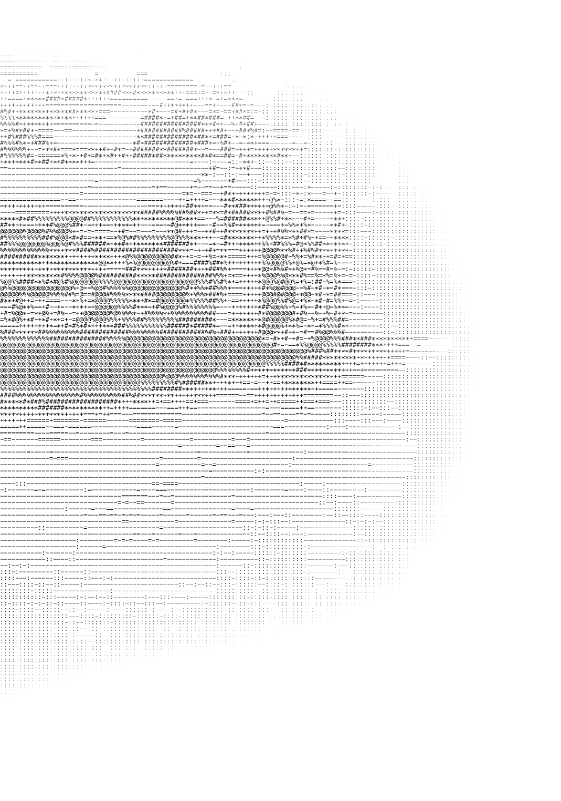

CASE_02
Original Narrative IP
Game Writer · Narrative Designer · Creative Direction
Status: Narrative Development

Investigative pulp narrative set within 1990s Tokyo, using underground racing culture as both an aesthetic foundation and a structure through which characters, conflicts and story progression unfold.
Narrative progression was designed around the idea that player choices should rarely exist as purely positive or negative outcomes. Decisions were intended to generate trade-offs, where immediate gains could produce unexpected costs and morally correct actions might still carry negative consequences.
Rather than presenting morality as a binary system, the objective was creating situations where players continuously question whether a decision was truly beneficial or simply the least damaging option available.
The player experience is built around pressure, momentum and uncertainty. The player is pushed to move fast, read people quickly and make decisions without ever having full control over the consequences.
Racing provides adrenaline and identity, while investigation creates doubt and friction. The objective is to make the player feel powerful in motion, but morally exposed when decisions begin to affect relationships, reputation and survival.
The world was designed around a predominantly nocturnal Tokyo, where nightlife, street culture and urban spaces become the primary lens through which the player experiences the city. Daylight appears only occasionally (visually overexposed, disorienting) reflecting the perception of those who have become disconnected from ordinary rhythms.
Power moves along lines of territory, reputation and affiliation. Racing culture and criminal networks are not exclusively male spaces: women operate within them, alongside organized female subcultures that move with autonomy in spaces that officially exclude everyone who isn't already inside. These tensions shape relationships, alliances and the options available to the player.
Particular attention was given to grounding fictional elements within real cultural references. Narrative and environmental direction drew from books, documentaries and historical material related to Japanese street culture, underground racing movements and the relationship between criminal organizations and urban communities.
The objective was not direct reproduction, but reinterpretation through a fictional and narrative framework.
The narrative direction also aimed to engage with social themes frequently discussed within contemporary Japanese society, including isolation, work culture, addiction, harassment, social pressure and personal identity.
Rather than functioning as explicit political statements, these themes were intended to emerge through characters, situations and individual stories, becoming part of the world itself rather than external commentary.
Selected development material
Quest Design
Opening sequence design exploring player perception, branching structure and narrative progression.
Narrative Pillars
Core design principles defining choice, morality and story progression.
Character Notes
Selected character notes exploring motivation, identity and role within the narrative system.